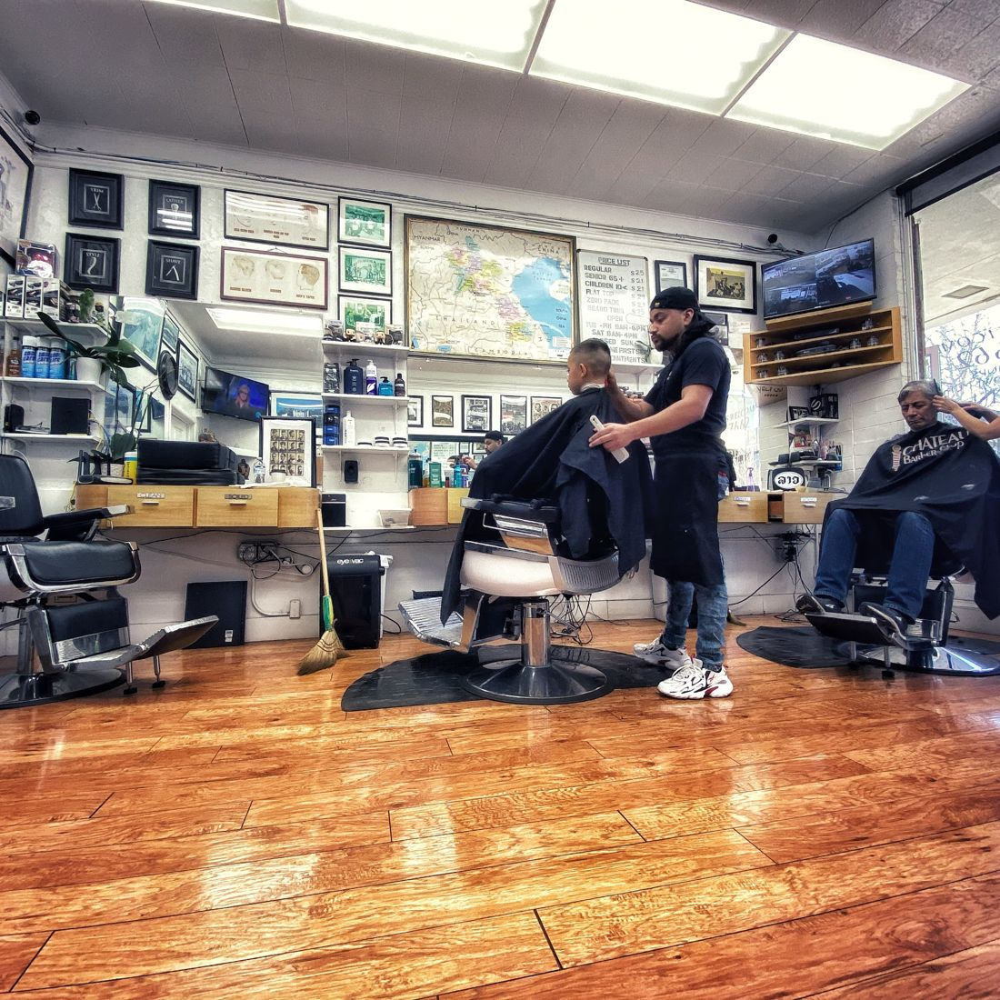
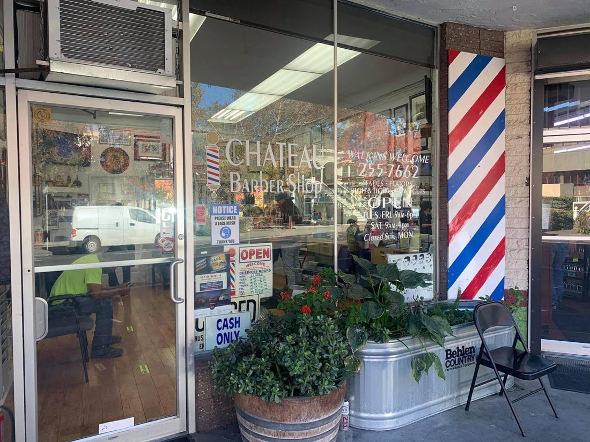
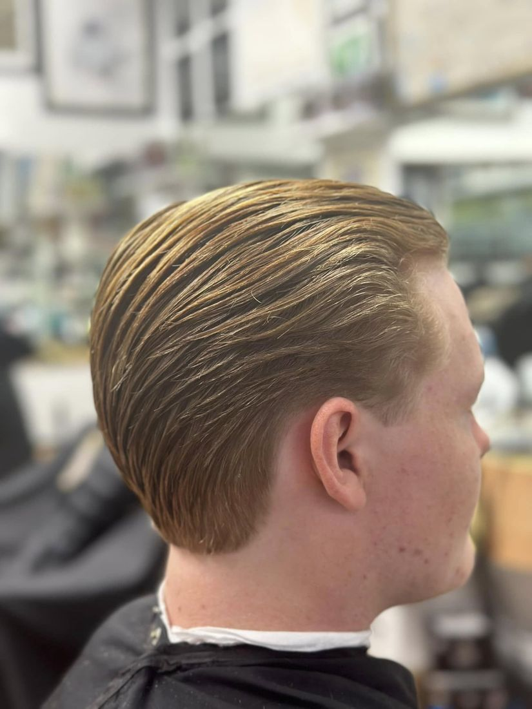
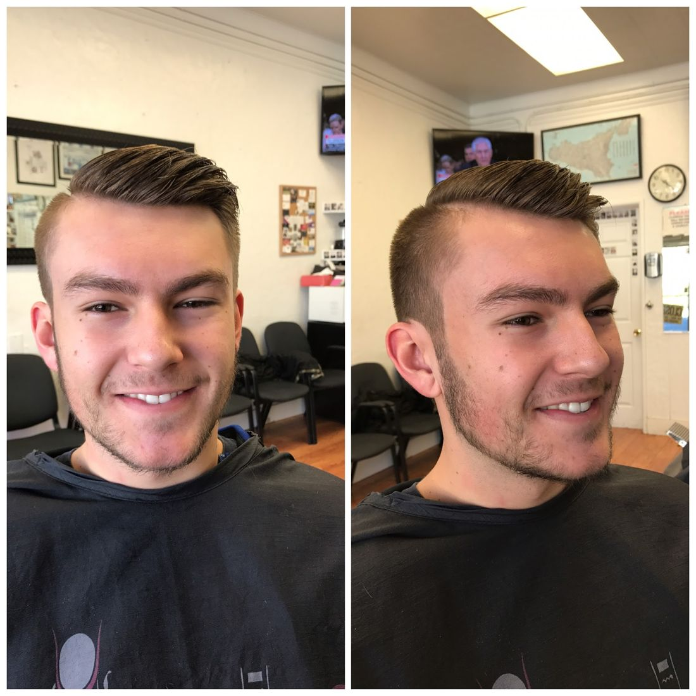
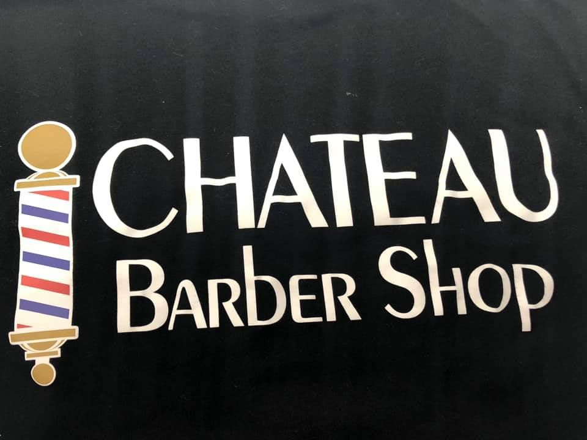
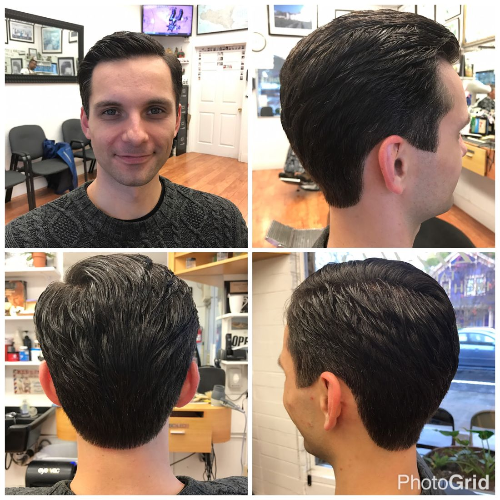
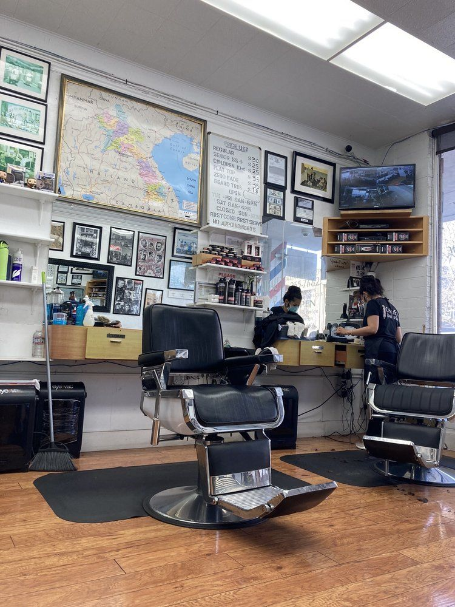
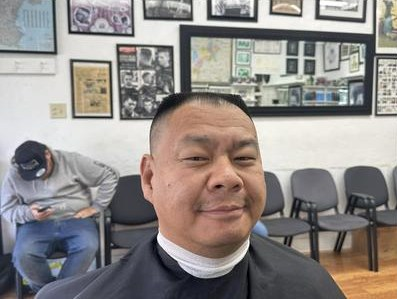

Standard Haircut
$35Precision cuts, traditional gentlemen's cuts and the latest trends.
Price per Napa Valley Register, Apr 2025
Barbershop · Downtown Napa · Since 2005
Downtown Napa's walk-in barbershop. Precision cuts, beards, and straight-razor work, first come, first served.
Our story
Owner Santysouk "San" Yankee is originally from Laos, where she learned to cut and style men's hair and ran her own salon. She came to the U.S. in 2001, went to barber school in Sacramento, and opened Chateau Barber Shop at 1521 Third St., the former home of Phil's Barber Shop, in June 2005 with the support of her late husband (Napa Valley Register).
Twenty years later the shop is one of the main barbershops in Napa, with lines out the door and regulars coming from Sonoma, Vallejo and even San Francisco. The specialties are precision haircuts, beards, straight-razor shaves and line work. No appointments: walk in, grab a seat, and become part of the family.

Specialties
Precision cuts, traditional gentlemen's cuts and the latest trends.
Price per Napa Valley Register, Apr 2025
Reduced price noted by a Yelp reviewer.
Price per a Yelp review, Jul 2024 (may have changed)
Beard trims and shaping.
Yelp specialties · Fresha lists Beard Trim
Classic straight-razor and hot towel shave.
Yelp specialties · Fresha lists Hot Towel Shave
Clean straight-razor lines and edges.
Yelp specialties
The shop doesn't post a price list online. Cash only. Call (707) 255-7662 with questions.
The crew
Ask for San, or take the next open chair.
Santysouk Yankee · Owner since 2005
Originally from Laos, San honed her craft there before immigrating in 2001. She says 90% of her customers come back weekly to monthly. (Napa Valley Register, Apr 2025)
Good to know
Gallery







Photos from the shop's public business listings.
In the news
“My business has grown tremendously from initially being an unknown barbershop with just myself cutting hair to being one of the main barbershops in Napa. Through excellent customer reviews and word of mouth, I have been able to grow my business into what it is today.”
“Having Winston’s next door has helped many people find my barber shop. Also, sometimes while waiting in line for a haircut customers will stop by Winston’s for something delicious to eat. We love being neighbors with them”
“We have people coming from Sonoma, Vallejo and sometimes even San Francisco”
Reviews
Yelp rating and count as shown on Yelp's listing via Yahoo Local (Oct 2026).
“People typically wait for the owner, but Andrea would always give a perfect cut, spending the time to pay close attention to detail. I like that a bald fade was truly a bald fade when coming here, some places arent willing to fully shave down to the skin when asked. This place was my go-to while living in the area and was always worth the drive for me. Miss coming here and will definitely go back when Im local.”
“San, is great with kids when I first started taking my son there he was two and a half He's 15 now Love this place super quick super professional and does a great job !!”
“It is absolutely fabulous the owner's been cutting my hair for the past 15 years”
“San has been doing my hair since I was young and I've had 4 people ever doing my hair and she has done the best she is my favorite barber ever!and I totally recommend this barber shop.”
“San is an amazing barber always friendly and can get you feeling brand new. If you are having a bad day go get a haircut but keep the negativity at home. If busy you should wait it's worth it.”
“There's a long line, it's cash only and they have $30 haircuts; kids 10 and under, and seniors 65 and older $25. San is skilled and did an excellent job quickly.”
“San is amazing! I’ve been coming here for 10+ years. It’s First Come First Serve but she is efficient! After the first time I came she remembered my style. She’s the best. People wait for her for a reason.”
“San is the best in the business always delivers a fresh cut. Good prices Wait time not bad. Street parking and a parking lot. Downtown Napa.”
“We found our new spot to take my 5 year old for an amazing, quick, friendly, and stylish cut! San was amazing with my son and he loved getting to pick his own lollipop.”
Quoted word for word from public Google and Yelp reviews (Yelp text via Yahoo Local; some may be shortened there). Google doesn't show reviewer names in the public excerpts we used.
FAQ
No. Chateau is walk-in only, first come first served. The owner says there are sometimes lines out the door, and reviewers say the wait is worth it.
Yes, cash only.
A standard haircut was $35 per the Napa Valley Register (April 2025). A 2024 Yelp review mentions $25 for kids 10 and under and seniors 65+. Call (707) 255-7662 for current prices.
Tuesday to Friday 9 AM–6 PM, Saturday 9 AM–4 PM. Closed Sunday and Monday.
There's street parking and a parking lot nearby, per a Yelp reviewer. The shop is at 1521 3rd St in downtown Napa.
Owner San Yankee opened Chateau Barber Shop in June 2005 and celebrated 20 years on June 1, 2025.
Visit
| Monday | Closed |
| Tuesday | 9 AM – 6 PM |
| Wednesday | 9 AM – 6 PM |
| Thursday | 9 AM – 6 PM |
| Friday | 9 AM – 6 PM |
| Saturday | 9 AM – 4 PM |
| Sunday | Closed |
Walk-ins only, no appointments. Cash only.
No appointment needed. Walk in Tuesday through Saturday at 1521 3rd St.
Call the shop